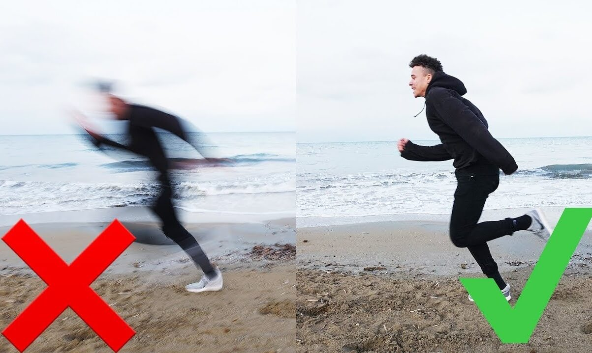

THIS IS THE ONLY THING WE CAN CALL A “MISTAKE” IN PHOTOGRAPHY
There are many videos and blog posts about photography mistakes. Personally, I really enjoy them and I’ve learned a lot from them. But James Popsys has a different view on the subject. In this video, he questions if there’s really such thing as “photography mistake,” and what is the only thing that we might call that way.
You’ll often hear me saying that we all make mistakes, but it’s all good as long as we learn something from them. Even if I don’t learn from my own, I rely on other photographers’ mistakes and I try not to repeat them. But there’s one important thing to note here: you should be aware of the situations when you want to break the rules. This is when you don’t make mistakes, but they are rather your creative choices. Let me give you some examples. Some photographers might consider an underexposed photo to be a mistake. But, it can be someone’s creative choice to emphasize mystery or drama. Then, some might think that breaking composition rules is a mistake. However, if you know the rule and deliberately break it to tell a story, it can hardly be a mistake.
Basically, it all comes down to this: mistakes are only the differences between your intention and the result. If you ended up with something you didn’t intend to make, then it’s a mistake. But if your photo breaks the rules because you wanted it – you did it right. I must admit that I’ve never thought about it this way. I still think it’s useful to learn from others and from their mistakes, but also definitely filter through them. And as long as you make a photo look the way you wanted, I guess that you’re doing the right thing. What do you think?